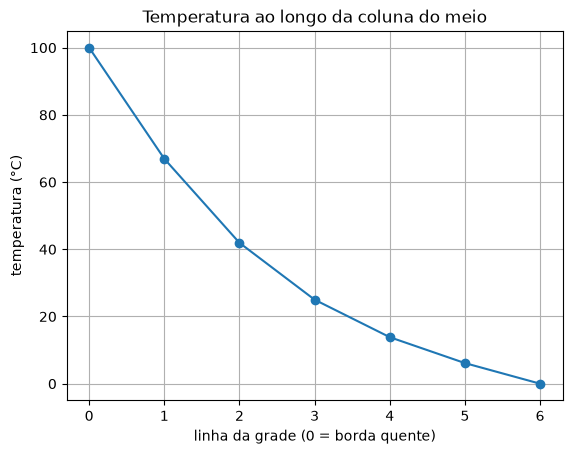

8. Jacobi e Gauss-Seidel¶
A eliminação de Gauss do capítulo 7 resolve qualquer sistema, mas tem um custo: para \(n\) equações, cerca de \(n^3/3\) contas. Com \(n = 1\,000\), são 300 milhões, o que é rápido num computador. Com \(n = 1\,000\,000\) (a temperatura em cada ponto de um motor, a pressão em cada ponto de uma represa), seriam \(10^{17}\) contas.
Esses sistemas gigantes têm uma particularidade: cada equação envolve só uns poucos vizinhos. A temperatura num ponto depende dos quatro pontos em volta, e não do milhão inteiro. Para eles existe outro caminho: chutar a resposta e ir melhorando, equação por equação, como nos métodos de raízes. É o jeito iterativo.
No quadro: o método de Jacobi¶
🧑🏫 No quadro — o método de Jacobi
1. Em cada equação \(i\), isole a incógnita \(x_i\) (a da diagonal):
2. Comece com um chute qualquer (tudo zero, por exemplo).
3. Calcule cada \(x_i\) novo com a fórmula, usando os valores antigos de todas as outras incógnitas.
4. Repita até o erro relativo aproximado (\(\varepsilon_a\) do capítulo 1) de todas as incógnitas ficar abaixo da tolerância.
# Jacobi, equacao por equacao, no sistema
# 3 x1 - 0.1 x2 - 0.2 x3 = 7.85
# 0.1 x1 + 7 x2 - 0.3 x3 = -19.3
# 0.3 x1 - 0.2 x2 + 10 x3 = 71.4 (solucao: 3, -2.5, 7)
# Cada equacao e resolvida para a "sua" incognita, usando os valores ANTIGOS.
x1, x2, x3 = 0.0, 0.0, 0.0
print(" it x1 x2 x3 eps_a max (%)")
for it in range(1, 21):
novo1 = (7.85 + 0.1 * x2 + 0.2 * x3) / 3
novo2 = (-19.3 - 0.1 * x1 + 0.3 * x3) / 7
novo3 = (71.4 - 0.3 * x1 + 0.2 * x2) / 10
eps = max(abs((novo1 - x1) / novo1), abs((novo2 - x2) / novo2), abs((novo3 - x3) / novo3)) * 100
x1, x2, x3 = novo1, novo2, novo3
print(f"{it:3d} {x1:10.6f} {x2:10.6f} {x3:10.6f} {eps:10.6f}")
if eps < 1e-4:
break
it x1 x2 x3 eps_a max (%)
1 2.616667 -2.757143 7.140000 100.000000
2 3.000762 -2.488524 7.006357 12.799924
3 3.000806 -2.499738 7.000207 0.448632
4 3.000022 -2.500003 6.999981 0.026128
5 2.999999 -2.500001 6.999999 0.000795
6 3.000000 -2.500000 7.000000 0.000045
Cada linha do código é uma equação do sistema, resolvida para a incógnita dela. Seis iterações e a solução \((3; -2{,}5; 7)\) aparece. Repare que nenhuma matriz foi montada nem transformada: só três contas repetidas.
Gauss-Seidel¶
Jacobi calcula o \(x_1\) novo e, na mesma iteração, continua usando o \(x_1\) antigo nas outras equações. Se o novo é melhor, por que não usá-lo logo?
🧑🏫 No quadro — a melhoria de Gauss-Seidel
1. Mesma fórmula de Jacobi, mas cada valor novo substitui o antigo imediatamente: ao calcular \(x_2\), já se usa o \(x_1\) desta iteração.
2. Em código, a diferença é apenas não guardar os valores novos à parte:
atualizar x1 antes de calcular x2.
3. Costuma convergir mais depressa que Jacobi (cerca de duas vezes menos iterações) e gasta menos memória. Jacobi tem uma vantagem: todas as equações de uma iteração podem ser calculadas ao mesmo tempo, em processadores diferentes.
# Gauss-Seidel: igual ao Jacobi, mas cada valor novo e usado LOGO que e
# calculado, ja nas equacoes seguintes da mesma iteracao.
x1, x2, x3 = 0.0, 0.0, 0.0
print(" it x1 x2 x3 eps_a max (%)")
for it in range(1, 21):
antigo1, antigo2, antigo3 = x1, x2, x3
x1 = (7.85 + 0.1 * x2 + 0.2 * x3) / 3
x2 = (-19.3 - 0.1 * x1 + 0.3 * x3) / 7 # ja usa o x1 novo
x3 = (71.4 - 0.3 * x1 + 0.2 * x2) / 10 # ja usa x1 e x2 novos
eps = max(abs((x1 - antigo1) / x1), abs((x2 - antigo2) / x2), abs((x3 - antigo3) / x3)) * 100
print(f"{it:3d} {x1:10.6f} {x2:10.6f} {x3:10.6f} {eps:10.6f}")
if eps < 1e-4:
break
it x1 x2 x3 eps_a max (%)
1 2.616667 -2.794524 7.005610 100.000000
2 2.990557 -2.499625 7.000291 12.502350
3 3.000032 -2.499988 6.999999 0.315843
4 3.000000 -2.500000 7.000000 0.001052
5 3.000000 -2.500000 7.000000 0.000012
Quatro iterações para o que Jacobi fez em seis, e a primeira já sai bem melhor (\(x_2 = -2{,}79\) contra \(-2{,}76\)), porque usou o \(x_1\) novo.
Para qualquer sistema¶
Escrito equação por equação, o método só serve para aquele sistema. Com a fórmula geral do quadro, um laço sobre as linhas da matriz resolve qualquer um:
# Gauss-Seidel para qualquer A x = b: a mesma conta, num laco sobre as linhas.
import numpy as np
def gauss_seidel(A, b, tol, max_iter):
n = len(b)
x = np.zeros(n)
for it in range(max_iter):
maior_mudanca = 0.0
for i in range(n):
soma = b[i]
for j in range(n):
if j != i:
soma = soma - A[i, j] * x[j]
novo = soma / A[i, i]
if novo != 0:
mudanca = abs((novo - x[i]) / novo) * 100
if mudanca > maior_mudanca:
maior_mudanca = mudanca
x[i] = novo
if maior_mudanca < tol:
return x, it + 1
return x, max_iter
A = np.array([[3.0, -0.1, -0.2],
[0.1, 7.0, -0.3],
[0.3, -0.2, 10.0]])
b = np.array([7.85, -19.3, 71.4])
x, iteracoes = gauss_seidel(A, b, 1e-6, 100)
print("solucao:", x, "em", iteracoes, "iteracoes")
A função devolve duas coisas, a solução e o número de iterações. Quem a chama
recebe as duas numa linha só: x, iteracoes = gauss_seidel(...).
Dominância diagonal¶
Os métodos iterativos têm um ponto fraco: podem divergir.
# Quebre o metodo: o mesmo sistema, em duas ordens.
# x + 3y = 7 e 4x + y = 6 (solucao: x = 1, y = 2)
x, y = 0.0, 0.0
print("ordem ruim (cada equacao isola a variavel de coeficiente pequeno):")
for it in range(1, 6):
x = 7 - 3 * y # da equacao x + 3y = 7
y = 6 - 4 * x # da equacao 4x + y = 6
print(f" it {it}: x = {x:10.1f} y = {y:10.1f}")
x, y = 0.0, 0.0
print("ordem boa (linhas trocadas: diagonal dominante):")
for it in range(1, 6):
x = (6 - y) / 4 # da equacao 4x + y = 6
y = (7 - x) / 3 # da equacao x + 3y = 7
print(f" it {it}: x = {x:10.6f} y = {y:10.6f}")
ordem ruim (cada equacao isola a variavel de coeficiente pequeno):
it 1: x = 7.0 y = -22.0
it 2: x = 73.0 y = -286.0
it 3: x = 865.0 y = -3454.0
it 4: x = 10369.0 y = -41470.0
it 5: x = 124417.0 y = -497662.0
ordem boa (linhas trocadas: diagonal dominante):
it 1: x = 1.500000 y = 1.833333
it 2: x = 1.041667 y = 1.986111
it 3: x = 1.003472 y = 1.998843
it 4: x = 1.000289 y = 1.999904
it 5: x = 1.000024 y = 1.999992
💥 Quebre o método
Na primeira ordem, a equação \(x + 3y = 7\) é usada para achar \(x\), cujo coeficiente (1) é pequeno perto do outro (3). Cada iteração multiplica o erro, e os números explodem. Trocando as equações de lugar, cada incógnita sai da equação em que ela tem o maior coeficiente, e o método converge.
A condição que garante a convergência é a dominância diagonal: em cada linha, o valor absoluto do elemento da diagonal é maior que a soma dos valores absolutos dos outros elementos da linha,
Antes de iterar, confira essa condição. Se ela falhar, tente reordenar as equações. (Ela é uma condição suficiente: há sistemas sem dominância em que o método converge mesmo assim, mas aí não há garantia.)
Uma placa aquecida¶
🌍 Contexto: temperatura em equilíbrio
Numa placa de metal com as bordas mantidas a temperaturas fixas, depois de algum tempo a temperatura para de mudar. Nesse equilíbrio, a temperatura em cada ponto é a média dos quatro vizinhos: se fosse maior, o ponto perderia calor para eles; se fosse menor, ganharia. Uma grade de pontos vira um sistema linear com uma equação por ponto, e cada equação envolve só cinco incógnitas. Os programas que calculam o aquecimento de chips, motores e fornos resolvem exatamente isso, com milhões de pontos.
Aqui não é preciso nem montar a matriz: o Gauss-Seidel percorre a grade, trocando cada ponto pela média dos vizinhos. A grade é uma matriz de temperaturas.
🧰 np.zeros com duas dimensões
np.zeros((linhas, colunas)), com um par de números entre parênteses, cria
uma matriz de zeros, pronta para ser preenchida com T[i, j] = .... Com um
número só, np.zeros(n), era um array de uma linha. E T[:, j] (do
capítulo 3)
pega a coluna j inteira.
# Temperatura numa placa de metal: a borda de cima e mantida a 100 °C e as
# outras tres a 0 °C. Em equilibrio, cada ponto de dentro tem a MEDIA dos quatro
# vizinhos. Sao 25 incognitas (uma grade 5 x 5 por dentro) -- e cada equacao
# envolve so 5 delas. Gauss-Seidel direto na grade, sem montar a matriz.
import numpy as np
import matplotlib.pyplot as plt
n = 7 # 7 x 7 pontos, contando as bordas
T = np.zeros((n, n)) # matriz de zeros, n linhas e n colunas
for j in range(n):
T[0, j] = 100.0 # borda de cima
for it in range(1, 501):
maior_mudanca = 0.0
for i in range(1, n - 1):
for j in range(1, n - 1):
novo = (T[i - 1, j] + T[i + 1, j] + T[i, j - 1] + T[i, j + 1]) / 4
if abs(novo - T[i, j]) > maior_mudanca:
maior_mudanca = abs(novo - T[i, j])
T[i, j] = novo
if maior_mudanca < 1e-6:
break
print(f"convergiu em {it} iteracoes")
print(np.round(T, 1))
meio = n // 2
plt.figure()
plt.plot(range(n), T[:, meio], "o-")
plt.xlabel("linha da grade (0 = borda quente)")
plt.ylabel("temperatura (°C)")
plt.title("Temperatura ao longo da coluna do meio")
plt.grid()
plt.show()
convergiu em 57 iteracoes
[[100. 100. 100. 100. 100. 100. 100. ]
[ 0. 46.9 62.9 66.9 62.9 46.9 0. ]
[ 0. 24.6 37.9 41.9 37.9 24.6 0. ]
[ 0. 13.5 22.1 25. 22.1 13.5 0. ]
[ 0. 7.2 12.1 13.8 12.1 7.2 0. ]
[ 0. 3.1 5.3 6.1 5.3 3.1 0. ]
[ 0. 0. 0. 0. 0. 0. 0. ]]

O ponto central ficou com exatamente 25 °C: a média das quatro bordas (100, 0, 0 e 0). Isso não é coincidência, e é um bom jeito de conferir o programa.
Mesmo método, outra área¶
🌍 Contexto: o PageRank
Em 1998, os fundadores do Google propuseram medir a importância de uma página da web pelas páginas que apontam para ela: ser citada por uma página importante vale mais que ser citada por uma desconhecida. Cada página divide a sua importância igualmente entre os links que ela tem. Como a importância de cada página depende da importância das outras, o resultado é um sistema linear, com uma equação por página da web.
# Mesmo metodo, outra area: o PageRank, a "importancia" de cada pagina da web.
# Quatro paginas; ligacoes: 0 -> 1, 0 -> 2, 1 -> 2, 2 -> 0, 3 -> 2.
# A importancia de uma pagina e a soma do que ela recebe de quem aponta para
# ela (cada pagina divide a sua importancia entre os links que tem), com um
# "fator de amortecimento" d = 0.85. E um sistema linear 4 x 4, resolvido por
# iteracao de Jacobi.
d = 0.85
r = [0.25, 0.25, 0.25, 0.25]
for it in range(100):
novo0 = (1 - d) / 4 + d * (r[2] / 1)
novo1 = (1 - d) / 4 + d * (r[0] / 2)
novo2 = (1 - d) / 4 + d * (r[0] / 2 + r[1] / 1 + r[3] / 1)
novo3 = (1 - d) / 4
mudanca = abs(novo0 - r[0]) + abs(novo1 - r[1]) + abs(novo2 - r[2]) + abs(novo3 - r[3])
r = [novo0, novo1, novo2, novo3]
if mudanca < 1e-10:
break
print(f"{it + 1} iteracoes")
for pagina in range(4):
print(f"pagina {pagina}: importancia {r[pagina]:.4f}")
47 iteracoes
pagina 0: importancia 0.3725
pagina 1: importancia 0.1958
pagina 2: importancia 0.3941
pagina 3: importancia 0.0375
A página 2, que recebe três links, é a mais importante. A 0 vem logo atrás, embora receba um link só: esse link vem justamente da página 2. A página 3, que ninguém cita, fica com o mínimo. Com bilhões de páginas, não há eliminação de Gauss possível: o PageRank é calculado por iteração.
Erros comuns deste capítulo¶
| Sintoma | Causa provável |
|---|---|
| os números crescem sem parar | falta de dominância diagonal: reordene as equações |
| Gauss-Seidel dá o mesmo resultado que Jacobi | os valores novos estão sendo guardados à parte e só atualizados no fim: isso é Jacobi |
| Jacobi dá resultado estranho logo na primeira iteração | o contrário: o x1 novo foi usado no cálculo de x2 na mesma iteração |
ZeroDivisionError |
um zero na diagonal: troque as equações de lugar |
| o laço para cedo demais | o critério olhou só a primeira incógnita; é preciso o maior \(\varepsilon_a\) de todas |
Onde isso é usado de verdade¶
- Simulação térmica e estrutural: aquecimento de processadores, fornos, motores; tensões em peças e prédios. Os sistemas têm milhões de incógnitas e são resolvidos por métodos iterativos (os parentes modernos do Gauss-Seidel).
- Busca na web: o PageRank e os rankings de redes sociais.
- Previsão do tempo e do clima: as equações da atmosfera, discretizadas em grades enormes.
- Processamento de imagens: "preencher" um buraco numa foto com a média dos vizinhos é resolver o mesmo sistema da placa aquecida.
- Redes elétricas: o fluxo de potência numa rede de transmissão de energia é calculado por iteração, com uma equação por subestação.
Resumo¶
- Sistemas grandes e esparsos (cada equação com poucas incógnitas) se resolvem melhor por iteração do que por eliminação.
- Jacobi: cada incógnita sai da sua equação, com os valores antigos das outras.
- Gauss-Seidel: igual, mas usando cada valor novo imediatamente. Costuma convergir mais depressa.
- A dominância diagonal garante a convergência. Sem ela, os métodos podem divergir: reordene as equações.
- Pare quando o maior \(\varepsilon_a\) de todas as incógnitas ficar abaixo da tolerância.
Para praticar¶
A Lista 08 começa com duas iterações à mão (✏️) e segue com a verificação da dominância, o Gauss-Seidel genérico, uma rede de sensores e o tráfego num cruzamento.